POSTERIOR AGREEMENT FOR CONNECTIVITY-BASED CORTEX PARCELLATION
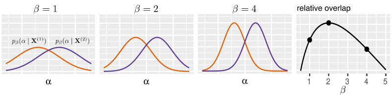
Author: Nico Stephan Gorbach , Institute of Machine Learning, ETHZ, email: nico.gorbach@inf.ethz.ch
Implementation of " Pipeline Validation for Connectivity-based Cortex Parcellation " by Nico S. Gorbach, Marc Tittgemeyer and Joachim M. Buhmann. The doctoral thesis https://www.research-collection.ethz.ch/handle/20.500.11850/261734 describes this algorithm in more detail.
Contents
- Introduction
- Input
- Imports
- Distance between connectivity matrices
- Nearest neighbours for smooth histogram clustering
- Deterministic annealing
- Perturb centroids
- Expectation maximization
- Costs for histogram clustering given instance 1
- Costs for histogram clustering given instance 2
- Smoothness potential
- Gibbs distribution 1
- Gibbs distribution 2
- Joint Gibbs distribution
- Centroids for instance 1
- Centroids for instance 2
- Match clusters across data instances
- Log partition sum for instance 1
- Log partition sum for instance 2
- Joint log partition sum
- Generalization capacity
- Number of equivariant transformations
- Information content (ASC)
- Bayesian Information Criterion (BIC)
- Akaike Information Criterion (AIC)
- Bayesian evidence
- Number of misclustered seed voxels
- Distance between centroids
- Results
- Runtime
clear all; close all
Introduction
This instuctional code demonstrates validation by posterior agreement for connectivity-based cortex parcellation of diffusion weighted imaging data. We assume that a connectivity matrix is given. In particular, we validate histogram clustering. Additionally, we provide the option of validating smooth histogram clustering (by setting smooth_clustering=true in the input) which adds a spatial regularity to the seed voxels.
Input
path.connectivity_matrix = './5203/neighbourhood_tracking/45_directions/connectivity_matrix.mat'; % path to connectivity matrix path.seed_coords = './5203/neighbourhood_tracking/45_directions/seed_coords.txt'; % path to seed coordinates path.results_directory = './5203/neighbourhood_tracking/45_directions/'; % directory to save results K = 2:3:29; % number of potential clusters (vector of integers) % Smooth histogram clustering smooth_clustering = false; % perform standard histogram clustering or smooth histogram clustering (Boolean) smooth_weighting = 10; % weight of the smoothness penalty (real positive number) number_of_neighbours = 80; % number of neighbours %20,50,80
Imports
connectivity_matrix = importdata(path.connectivity_matrix); seed_coords = importdata(path.seed_coords);
Distance between connectivity matrices
seed_idx = randperm(size(connectivity_matrix{1},1)); seed_idx = sort(seed_idx(1:1000));
p = bsxfun(@rdivide,connectivity_matrix{1}(seed_idx,:),sum(connectivity_matrix{1}(seed_idx,:),2));
q = bsxfun(@rdivide,connectivity_matrix{2}(seed_idx,:),sum(connectivity_matrix{2}(seed_idx,:),2));
for i = 1:size(p,1)
dsim_across_instances.JSDiv(i) = JSDiv(p(i,:),q(i,:));
dsim_across_instances.euclid(i) = pdist2(p(i,:),q(i,:));
dsim_across_instances.hamming = pdist2(double(logical(p(i,:))),double(logical(q(i,:))),'hamming');
end
disp(['Average Jenson Shannon distance between connectivity matrices: ' num2str(mean(dsim_across_instances.JSDiv))]);
disp(['Average Euclidean distance between connectivity matrices: ' num2str(mean(dsim_across_instances.euclid))]);
disp(['Average Hamming distance between connectivity matrices: ' num2str(mean(dsim_across_instances.hamming))]);
%
Average Jenson Shannon distance between connectivity matrices: 0.54531 Average Euclidean distance between connectivity matrices: 0.066218 Average Hamming distance between connectivity matrices: 0.012698
Nearest neighbours for smooth histogram clustering
if smooth_clustering dsim_seed_coords = pdist2(seed_coords,seed_coords); dsim_seed_coords(logical(eye(size(dsim_seed_coords,1)))) = realmax; [nearest_neighbours.dist,nearest_neighbours.idx] = sort(dsim_seed_coords,2,'ascend'); nearest_neighbours.dist = nearest_neighbours.dist(:,1:number_of_neighbours); nearest_neighbours.idx = nearest_neighbours.idx(:,1:number_of_neighbours); end
% remove zero columns
rm_idx(1,:) = sum(connectivity_matrix{1},1)==0;
rm_idx(2,:) = sum(connectivity_matrix{2},1)==0;
connectivity_matrix{1}(:,rm_idx(1,:)) = [];
connectivity_matrix{2}(:,rm_idx(2,:)) = [];
% dissimilarity matrix if exist([path.results_directory 'dsim.mat1']) dsim = importdata([path.results_directory 'dsim.mat']); else %d = connectivity_matrix{1}; d(:,sum(d,1)<4000) = []; d = connectivity_matrix{1}; d(:,sum(d,1)<600) = []; d = single(full(d)); dsim = pdist2(d,d); % d = bsxfun(@rdivide,d,sum(d,2)); % log_d = d; log_d(log_d==0) = eps; log_d = log(log_d); % dsim = single(full(-d * log_d')); % dsim = flipdim(flipdim((dsim + dsim') / 2,1),2); % dsim(logical(eye(size(dsim,1)))) = mean(mean(dsim)); % save([path.results_directory 'dsim.mat'],'dsim','-v7.3'); % clear d log_d end
% preprocessing for Bayesian evidence
alpha{1} = full(sum(connectivity_matrix{1},1));
alpha{2} = full(sum(connectivity_matrix{1},1))/100;
% start timer
tic;
Deterministic annealing
Determine global minimizer.
% Annealing settings inv_temp_init = 1/1000; % starting inverse temperature (5000 for smooth hc) inv_temp_step = 1.1; % inverse temperature step inv_temp_stop = 1/10; % stopping inverse temperature perturb_sd = 1e-6; % centroid perturbation for k = K
% Initialization of Gibbs distributions gibbs_dist1 = ones(size(connectivity_matrix{1},1),k) ./ k; gibbs_dist2 = ones(size(connectivity_matrix{2},1),k) ./ k; % Initialization of centroids centroids1 = gibbs_dist1'*connectivity_matrix{1}; centroids1 = bsxfun(@rdivide,centroids1,sum(centroids1,2)); centroids1(centroids1==0) = eps; centroids2 = gibbs_dist2'*connectivity_matrix{2}; centroids2 = bsxfun(@rdivide,centroids2,sum(centroids2,2)); centroids2(centroids2==0) = eps; j = 0; inv_temp = inv_temp_init; inv_temp_pack = []; %subplot(2,2,3); cla while inv_temp <= inv_temp_stop
Perturb centroids
Avoid local minimum by perturbing centroids: 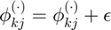
centroids1 = centroids1 + perturb_sd * rand(size(centroids1));
centroids1 = bsxfun(@rdivide,centroids1,sum(centroids1,2)); % normalize
centroids2 = centroids2 + perturb_sd * rand(size(centroids2));
centroids2 = bsxfun(@rdivide,centroids2,sum(centroids2,2)); % normalize
Expectation maximization
Iterate between determining Gibbs distributions and maximzing variational lower bound w.r.t. centroids.
for iter = 1:10
Costs for histogram clustering given instance 1
KL divergence between empirical probabilities (data) and centroid probabilities (up to proportionality constant): 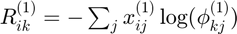
potential1 = -connectivity_matrix{1} * log(centroids1)';
Costs for histogram clustering given instance 2
KL divergence between empirical probabilities (data) and centroid probabilities (up to proportionality constant):
potential2 = -connectivity_matrix{2} * log(centroids2)';
Smoothness potential
if smooth_clustering smooth_potential1 = blockfun(1-gibbs_dist1(nearest_neighbours.idx',:),... [size(nearest_neighbours.idx,2),1],@sum); smooth_potential2 = blockfun(1-gibbs_dist2(nearest_neighbours.idx',:),... [size(nearest_neighbours.idx,2),1],@sum); potential1 = potential1 + smooth_weighting * smooth_potential1; potential2 = potential2 + smooth_weighting * smooth_potential2; end
Gibbs distribution 1
Maximum entropy distribution: 
gibbs_dist1 = exp(-inv_temp * potential1);
partition_sum1 = sum(gibbs_dist1,2);
gibbs_dist1 = bsxfun(@rdivide,gibbs_dist1,partition_sum1);
% avoid underflow
idx = find(partition_sum1==0);
if ~isempty(idx)
[~,min_cost_idx] = min(potential1(idx,:),[],2);
max_ind = sub2ind(size(gibbs_dist1),idx,min_cost_idx);
gibbs_dist1(idx,:) = zeros(length(idx),k);
gibbs_dist1(max_ind) = 1;
end
Gibbs distribution 2
Maximum entropy distribution: 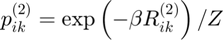
gibbs_dist2 = exp(-inv_temp * potential2);
partition_sum2 = sum(gibbs_dist2,2);
gibbs_dist2 = bsxfun(@rdivide,gibbs_dist2,partition_sum2);
% avoid underflow
idx = find(partition_sum2==0);
if ~isempty(idx)
[~,min_cost_idx] = min(potential2(idx,:),[],2);
max_ind = sub2ind(size(gibbs_dist2),idx,min_cost_idx);
gibbs_dist2(idx,:) = zeros(length(idx),k);
gibbs_dist2(max_ind) = 1;
end
Joint Gibbs distribution
Maximum entropy distribution: 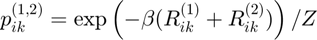
dist_joint = exp(-inv_temp * (potential1 + potential2));
joint_partition_sum = sum(dist_joint,2);
Centroids for instance 1
Probability prototype: 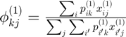
centroids1 = gibbs_dist1'*connectivity_matrix{1};
centroids1 = bsxfun(@rdivide,centroids1,sum(centroids1,2));
centroids1(centroids1==0) = eps;
Centroids for instance 2
Probability prototype: 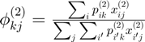
centroids2 = gibbs_dist2'*connectivity_matrix{2};
centroids2 = bsxfun(@rdivide,centroids2,sum(centroids2,2));
centroids2(centroids2==0) = eps;
end
% increase inverse temperature:
inv_temp = inv_temp * inv_temp_step;
Match clusters across data instances
Use Hungarian algorithm to match clusters.
c1 = zeros(k,length(rm_idx(1,:))); c2 = zeros(k,length(rm_idx(2,:)));
c1(:,~rm_idx(1,:)) = centroids1; c2(:,~rm_idx(2,:)) = centroids2;
match_clusters_idx = munkres(pdist2(c1,c2));
potential2=potential2(:,match_clusters_idx);
Log partition sum for instance 1
Determine log partition sum while avoiding underflow: 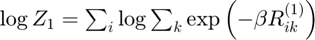
scaled_cost1 = -inv_temp * potential1;
% log-sum-exp trick to prevent underflow
max_scaled_cost1 = max(scaled_cost1,[],2);
log_partition_sum1 = max_scaled_cost1 + log(sum(exp(bsxfun(@minus,scaled_cost1,max_scaled_cost1)),2));
Log partition sum for instance 2
Determine log partition sum while avoiding underflow: 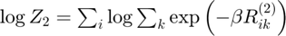
scaled_cost2 = -inv_temp * potential2;
% log-sum-exp trick to prevent underflow
max_scaled_cost2 = max(scaled_cost2,[],2);
log_partition_sum2 = max_scaled_cost2 + log(sum(exp(bsxfun(@minus,scaled_cost2,max_scaled_cost2)),2));
Joint log partition sum
Determine joint log partition sum while avoiding underflow: 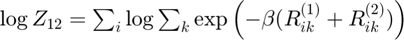
joint_scaled_cost = -inv_temp * (potential1 + potential2);
% log-sum-exp trick to prevent underflow
max_scaled_cost3 = max(joint_scaled_cost,[],2);
log_joint_partition_sum = max_scaled_cost3 + log(sum(exp(bsxfun(@minus,joint_scaled_cost,max_scaled_cost3)),2));
j = j+1;
Generalization capacity
Resolution of the hypothesis space: 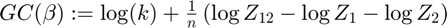
gc{k}(j) = log(k) + sum(log_joint_partition_sum - log_partition_sum1 ...
- log_partition_sum2) ./ size(partition_sum1,1);
% pack inv_temp_pack(j) = inv_temp; gibbs_dist_packed1{k}(:,:,j) = single(gibbs_dist1); gibbs_dist_packed2{k}(:,:,j) = single(gibbs_dist2(:,match_clusters_idx)); % gc_plot = gc{k}; %gc_plot(gc_plot<0) = NaN; % hold on; plot(inv_temp,gc_plot,'LineWidth',2); drawnow
end
Number of equivariant transformations
Richness of the hypothesis space: 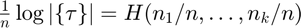
gibbs_dist1 = round(gibbs_dist1);
d = sum(gibbs_dist1,1); d = d./sum(d); d(d==0) = 1;
nTransformations = -d * log(d)';
% correct generalization capacity
gc{k} = gc{k}-log(k)+nTransformations;
% transforming units from nats to bits
gc{k} = gc{k} * log2(exp(1));
Information content (ASC)
Quality of algorithm: 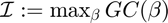
[info_content(k),max_gc_idx(k)] = max(gc{k});
Bayesian Information Criterion (BIC)
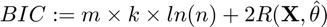 where 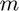 is the number of bins and 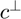 is the empirical risk minimizer
if ~smooth_clustering cost = sum(sum(gibbs_dist1 .* (-connectivity_matrix{1} * log(centroids1)'))); else cost = sum(sum(potential1(logical(gibbs_dist1)))); end BIC(k) = size(connectivity_matrix{1},2) * k * log(size(connectivity_matrix{1},1)) + 2 * cost;
Akaike Information Criterion (AIC)
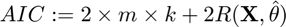 where is the number of bins and is the empirical risk minimizer
AIC(k) = 2 * size(connectivity_matrix{1},2) * k + 2 * cost;
Bayesian evidence
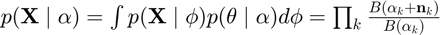 where 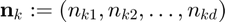 and 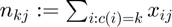
[~,labels] = max(gibbs_dist1,[],2);
log_bayes_evidence{1}(k) = 0;
log_bayes_evidence{2}(k) = 0;
for c = unique(labels)'
ncj = full(sum(connectivity_matrix{1}(labels==c,:),1));
alpha_tmp{1} = alpha{1}/k; alpha_tmp{1}(ncj==0) = [];
alpha_tmp{2} = alpha{2}; alpha_tmp{2}(ncj==0) = [];
ncj(ncj==0) = [];
log_bayes_evidence{1}(k) = log_bayes_evidence{1}(k) + sum(gammaln(alpha_tmp{1} + ncj)) ...
+ gammaln(sum(alpha_tmp{1})) - gammaln(sum(alpha_tmp{1} + ncj)) - sum(gammaln(alpha_tmp{1}));
log_bayes_evidence{2}(k) = log_bayes_evidence{2}(k) + sum(gammaln(alpha_tmp{2} + ncj)) ...
+ gammaln(sum(alpha_tmp{2})) - gammaln(sum(alpha_tmp{2} + ncj)) - sum(gammaln(alpha_tmp{2}));
end
Number of misclustered seed voxels
number_misclustered_objects(k) = sum(diag(round(gibbs_dist1)' * ~round(gibbs_dist2(:,match_clusters_idx))))/2;
Distance between centroids
[~,max_gc_idx] = max(gc{k});
centroids_opt = double(gibbs_dist_packed1{k}(:,:,max_gc_idx))'*connectivity_matrix{1};
centroids_opt = bsxfun(@rdivide,centroids_opt,sum(centroids_opt,2));
centroids_opt(centroids_opt==0) = eps;
Results
display_result(gc,info_content,gibbs_dist_packed1,gibbs_dist_packed2,inv_temp_pack,log_bayes_evidence,BIC,AIC,K(1:find(K==k)),...
dsim,centroids_opt,number_misclustered_objects,seed_coords);
Number of potential clusters: 2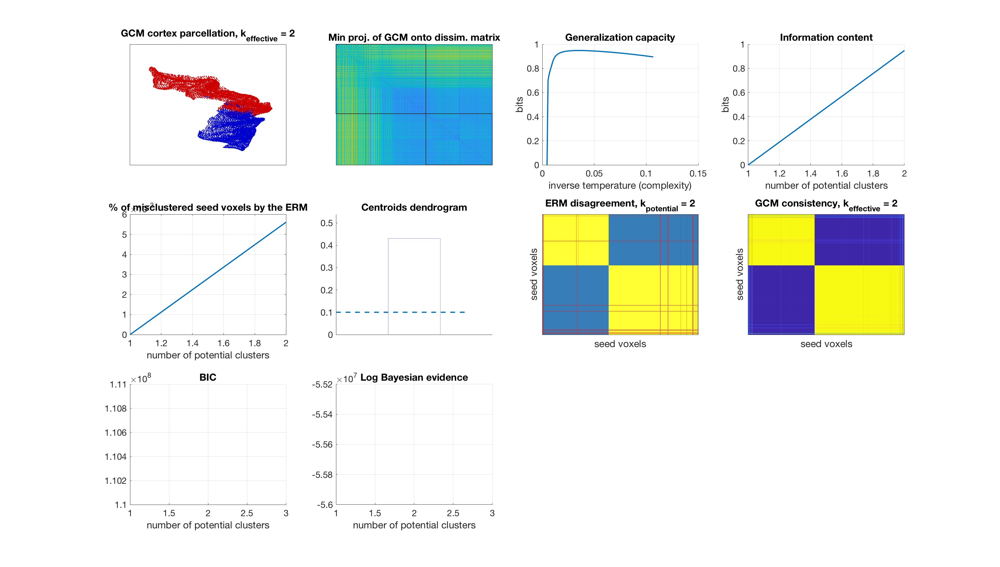
Number of potential clusters: 5
Number of potential clusters: 8
Number of potential clusters: 11
Number of potential clusters: 14
Number of potential clusters: 17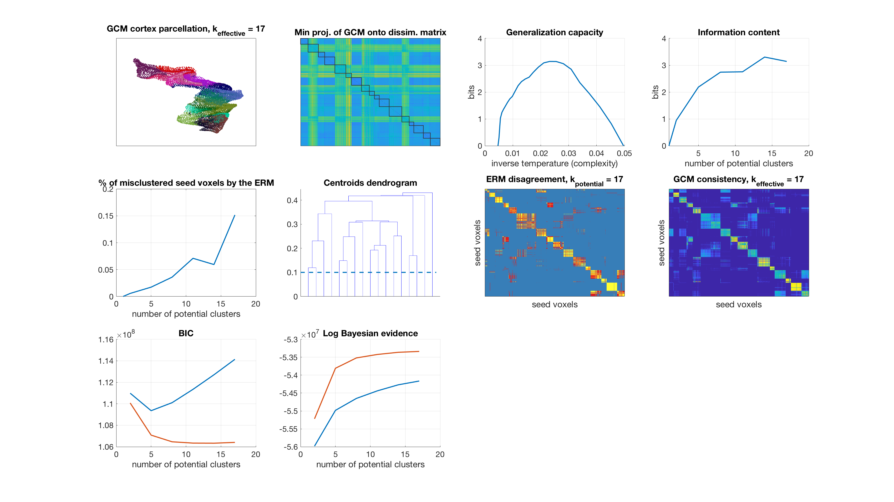
Number of potential clusters: 20
Number of potential clusters: 23
Number of potential clusters: 26
Number of potential clusters: 29
end
Runtime
% display runtime disp(['runtime: ' num2str(toc/60) ' minutes on ' computer])
runtime: 28.6007 minutes on MACI64
% save resutls %save([path.results_directory 'parcellation.mat'],'gibbs_dist_packed1','gibbs_dist_packed2','gc','info_content','BIC','AIC','log_bayes_evidence','dsim_across_instances') save([path.results_directory 'parcellation.mat'],'gibbs_dist_packed1','gibbs_dist_packed2','gc','info_content','BIC','AIC','log_bayes_evidence')